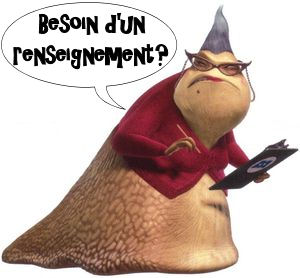
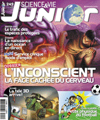
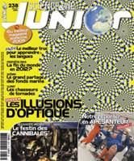
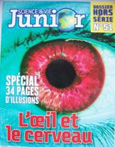

Remerciements
Optic 2000
, Anstaing, notamment l'Opticienne Clémence B
.UGC Ciné Cité
, Villeneuve d'Ascq, notamment le Directeur Adjoint Poisson D
.Leaderprice
pour nous avoir fourni un œil de porc gratuitement.Merci à ces personnes et entreprises qui nous ont aidées et nous ont renseignées tout au long de nos TPE. 
Recherches

Auteur:
GAVET NicolasRevue :
Science et Vie JuniorTitre:
La télé en relief arriveDate:
Juin 2010Numéro:
249Pages :
58-61

Auteur:
PEYRIÈRES CarineRevue :
Science et Vie JuniorTitre:
Illusion, quand tu nous tiensDate:
Juillet 2009Numéro:
238Pages :
42-57

Revue :
Science et Vie JuniorTitre:
L’œil et le cerveauDate:
Janvier 2003Numéro:
Hors-Série N°51
Auteurs :
Ensemble des InternautesTitres :
Wikipedia :
Auteur :
SAUTET ClémentTitre :
La 3D Pour Les NulsEditeur :
L’ExpressDate :
24/06/2010URL : Lien
Auteur :
CROISET LaureTitre :
: Cinéma : 10 Questions Sur la 3DEditeur :
Eddy MoineDate :
20/08/2009URL : Lien
Auteur :
LEBUISSONTitre :
: Généralités : La Vue et la VisionEditeur :
Clinique De La VisionDate :
13/11/2010URL : Lien
Auteur :
Docteur DEPOUTRETitre :
: Pour tout savoir sur l’ophtalmologieEditeur :
Clément DEPOUTREDate :
21/05/2009URL : Lien
Auteur :
SosoTitre :
: La vidéo 3D stéréoscopique, c'est quoi?Editeur :
Dahn YogaDate :
28/12/2009URL : Lien
Auteur :
THURET RomainTitre :
: CES 2011: quoi de neuf en hi-tech?Editeur :
Romain BramiDate :
16/01/2011URL : Lien
Titre :
2: MWC 2011 : LG Optimus 3D, le smartphone en reliefURL: Lien
Auteur :
OWEN DaveTitre :
: Stereo-Blind: People who can't see 3DEditeur :
Wavelength MediaDate :
19/01/2010URL : Lien
Emission TV :
Le TrucChaîne:
ArteTitre :
: Images en relief